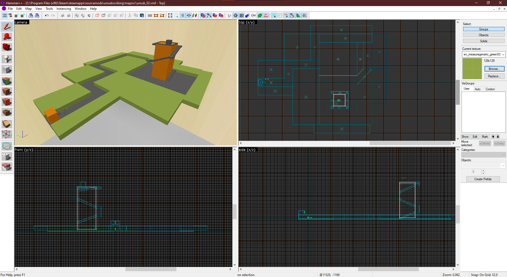
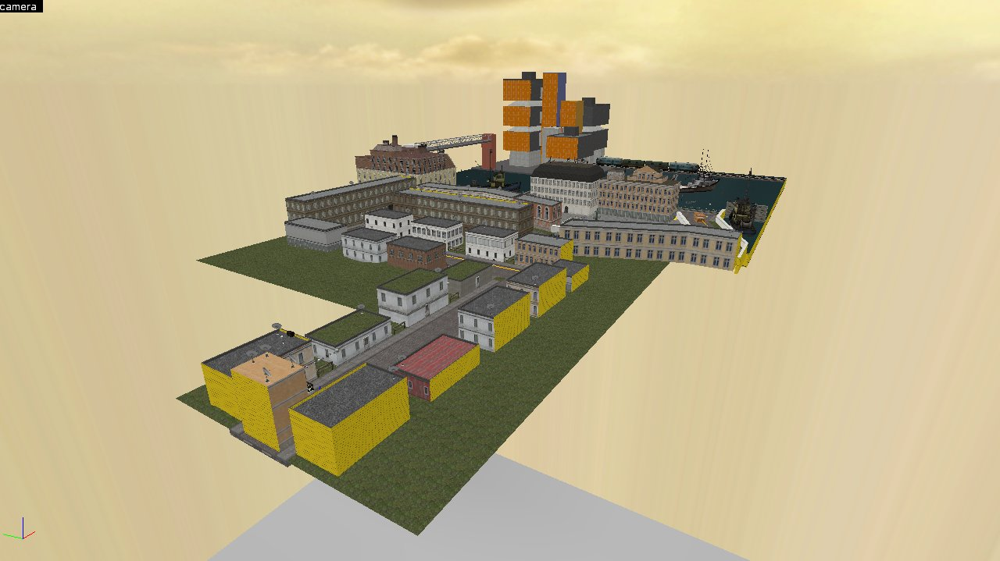

Unsubscribing
Présentation et déroulement du projet.
Présentation
- Solo
- 2 mois
- Créé en prévision du concours d'entrée au master JMIN
- Source SDK 2013
Unsubscribing est un mod pour Half-Life 2 constitué de deux niveaux dont le thème commun est le désabonnement à un service, d'une manière ou d'une autre.
Déroulement du projet
Unsubscribing devait au départ contenir trois niveaux, mais le temps alloué au projet (mi-juillet à début novembre, à temps plein) ne laissait la place que pour deux niveaux complets. Robot Destruction (RD) a été la première map à être finalisée, étant une version améliorée de ce que j'ai présenté pour "Map Labs: Crossfire". Television Rules The Nation (TRTN) est une création originale.
Television Rules The Nation
Dans TRTN, nous nous retrouvons dans un monde contemporain où le Président est récemment devenu directeur d'une chaîne de télévision. Suite au changement de ligne éditoriale, de plus en plus de personnes aimeraient se désabonner de la chaîne, sans succès. Jusqu'à ce que le joueur décide de prendre les choses en main et aller voir le Président en personne.
La première section consiste en un prototype de rail shooter, où l'on doit tirer sur des télés pour marquer des points. Si l'idée avait pu être poussée jusqu'au bout, j'aurais aimé que l'on puisse voir des NPC lancer des télés de leurs fenêtres, ce qui aurait amené une meilleure justification à cette section.
La seconde section consiste en une exploration des tours de la chaîne, où l'on active un ascenseur et acquiert de meilleures armes. Elle nous amène à une confrontation avec le directeur de la chaîne, la section finale du niveau, comprenant une bataille entre les sbires du directeur et le joueur.
Il y a eu deux itérations de la première section :
 Entre les deux, la tour a radicalement changé d'apparence et de taille, prenant totale inspiration du campus de Tolbiac à Paris. N'ayant jamais été sur ce campus, il était plus facile de pouvoir imaginer un nouveau décor à l'intérieur sans chercher le réalisme. Le parcours rail shooter prend également plus de virages et est plus long.
Cettre première section terminée, je suis passée à la seconde, essayant de construire des intérieurs qui pourraient faire passer deux sentiments : ces tours abritent de vrais bureaux, et les gens qui y travaillent sont déconnectés de la réalité vu la froideur et le brutalisme de ces tours.

Le moteur Source est connu pour ses espaces liminaux. Vides, mais avec cette sensation étrange qu'ils sont pour autant habités. J'espère avoir réussi à donner ce sentiment avec les bureaux de ce niveau.
Cette seconde section manque de plus d'indications sur ce que l'on doit faire, il n'y a pas d'indication d'un ascenseur ni d'un levier pour l'activer. Tout se repose sur l'exploration à tâtons du bâtiment. C'est quelque chose que j'efforce de ne plus reproduire depuis.

La dernière section est également la dernière à être construite, et c'est celle que j'ai le plus apprécié. J'ai pu tester Faceposer, l'outil du moteur Source permettant de créer des cinématiques scriptées avec du lipsync et des déplacements dans l'espace.
Mais c'est également une expérience de combat design que j'ai apprécié découvrir. Pouvoir placer les ennemis et scripter à quel moment ils doivent intervenir, en rythme avec la musique que je choisis... Ce n'est peut-être pas le meilleur combat de l'année sur Source, mais il n'est pas non plus un échec à mes yeux.
Robot Destruction
Crossfire, l'une des maps multijoueur d'Half-Life les plus connues, rencontre le thème spatial de Team Fortress 2.
Entre la version originale et ce niveau, une intro et deux choix de fins supplémentaires ont été ajoutés, l'espace retravaillé pour être plus attrayant visuellement, et des effets visuels supplémentaires. Bien que la dernière version soit plus intéressante selon moi et que j'en sois satisfait, le game design en tant que tel ne colle pas au niveau, qui n'est pas une création originale de toute manière. Mais le thème spatial m'intéresse, et je pourrais peut-être produire un autre niveau dans ce thème.
Unsubscribing a été dans l'ensemble une bonne expérience en solo pour montrer mes compétences en level design à l'époque. Le moteur Source, bien qu'aujourd'hui dépassé, peut permettre à tout un chacun de raconter des histoires et créer des expériences hors du commun sans prérequis de programmation. Même si aujourd'hui je me concentre sur des moteurs plus modernes, Source reste une réponse que j'apporte aux personnes souhaitant découvrir le développement de jeux vidéo en auto-didacte sans se décourager.